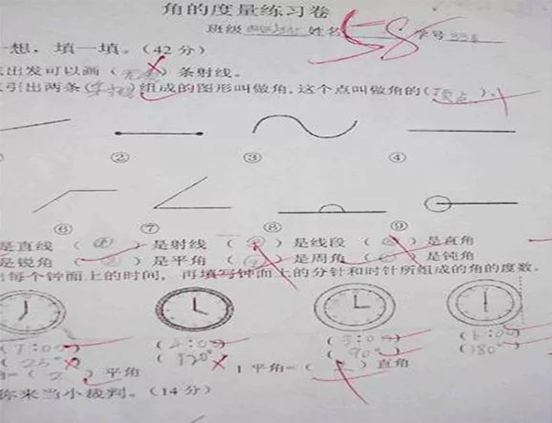

我女儿曾经就因为成绩的事情经常让我头疼，一直在班上的中下游，数学成绩从来没及格过，英语更别说，单词记不住几个，语文还能靠凑字数得点分！我这个当妈的心里都急死了。

（如果你的孩子也存在同样的问题，可以加老师微信详细咨询：
每次考完试都被老师喊去“喝茶”：上课总开小差，讲过的题一问三不知；背课文别的学生都背熟了，就她记不住，你看看这卷子，有几个对的地方。

各式各样的辅导班也报名了，成绩也没有太多的提升。辅导班的老师说这是她基础差脑子慢，课余时间多补补就好了，但是平时双休都用来补课，孩子一点休息时间都没有，都有些厌恶学习了，不知道该怎么办了！
平时带她去上辅导班，兴趣班，都要哄着去。像是完成给我们的任务一样，根本学不进去。回到家就抱着手机玩游戏，要不就玩电脑，看电视，说也说不听，还跟我顶嘴。生气还不理我，我真是所有的方法都用个遍了，真的无能为力了。
“补课”不如“补方法”
功夫不负有心人，在一个关于孩子学习的讲座上认识了位新启源教育的顾问！新启源教育在教育界也是很出名的，很多孩子都是用了他的方法，成绩都能提高至少20分，加了他微信（
我向老师咨询了孩子成绩老是不好的原因，教育顾问跟我说：孩子成绩差不是智商原因，关键在于学习方法有没有找对，没有培养学习兴趣，学习兴趣浓厚的孩子，40分钟做完作业，20分钟预习第二天的内容，不会学的孩子，1个小时可能还在跟作业较劲。
不会学，才导致学不会！！！
学不会，才导致成绩差！！！
你还没有意识到主要问题出在哪里吗？
15天时间，突飞猛进
在学习了教育顾问的方法持续15天之后，我女儿简直是变了个人，最明显的变化：上课能听懂了，作业也写的比以前快了，错误也很少，放学回来回来后笑容多了，还得意的跟我说，老师今天夸奖她了，人变的开朗自信，积极。最近还代表班级参加六一儿童节舞蹈表演，看着台上开心快乐的女儿，我打心眼里感谢老师
这半年多的时间里，我用老师给的教育孩子的方法，培养着我的孩子，孩子也变得越来越优秀了。刚刚结束的期末考试，数学也是考了99分，英语91分，语文96分，一下跃进了全班前5名也孩子是给我长脸了！